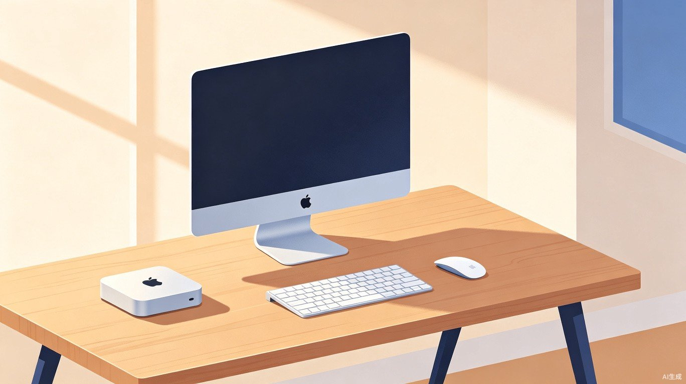

从零开始熟悉你的新 Mac。掌握应用安装与卸载，探索高效软件推荐。

Mac mini 是一台没有屏幕、键盘和鼠标的小型主机，接上外设后即可开始使用。macOS 系统在交互逻辑上与 Windows 有不少差异，本教程面向刚接触 Mac 的新用户，帮助你快速上手，并重点介绍常用应用的推荐，以及如何安装和删除程序。
首次开机后，系统会引导你完成这些关键步骤
选择「简体中文」和「中国大陆」，后续可在设置中更改。
使用 Wi-Fi 或有线网络完成连接，确保后续能下载更新。
已有 iPhone 或 iPad 可直接用同一账号，iCloud 内容自动同步。
设置用户名和密码，这是日常使用中的开机密码。
设置完成后，你会进入 macOS 桌面。屏幕底部的一排图标是 程序坞（Dock），相当于 Windows 的任务栏；屏幕顶部的横条是 菜单栏，显示当前应用的菜单和系统状态。
掌握这些，你的 Mac 操作效率将提升数倍
macOS 的文件管理器。Dock 栏最左侧的笑脸图标，左侧边栏可固定常用位置。
按 Command + 空格键，快速搜索应用、文件、计算数值，甚至天气和汇率。
火箭图标，全屏网格展示所有应用。长按进入抖动模式可卸载部分应用。
点击左上角苹果图标进入。调整网络、显示器、触控板、隐私权限等。
macOS 安装应用有三种主要方式，按推荐优先级排列
苹果官方应用商店，中的应用均经过审核，安全性高，且支持自动更新。
优点：安全可靠、自动更新、卸载方便。
局限：部分应用因审核政策或开发者选择并未上架，很多专业工具需要去官网下载。
很多应用并未上架 App Store，需要用户直接到官网下载安装包。
.dmg 磁盘映像文件，或是一个 .zip 压缩包。
.dmg 文件：双击打开，将应用图标拖拽到「应用程序」文件夹中即可。.zip 文件：双击解压，然后将解压出的应用移动到「应用程序」文件夹。注意：只从官方网站或可信渠道下载应用，避免从不明来源获取安装包。
Homebrew 是 macOS 上最流行的第三方包管理器，可以通过命令行快速安装大量开源或免费应用。
安装 Homebrew：打开「终端」应用，粘贴以下命令并回车：
/bin/bash -c "$(curl -fsSL https://raw.githubusercontent.com/Homebrew/install/HEAD/install.sh)"使用 Homebrew 安装应用示例：
# 安装 Chrome 浏览器
brew install --cask google-chrome
# 安装 Visual Studio Code 编辑器
brew install --cask visual-studio-code
# 安装微信
brew install --cask wechatHomebrew 安装的应用同样会出现在启动台中，更新时只需在终端运行 brew upgrade 即可批量处理。
macOS 卸载应用的方式比 Windows 更简洁，通常不需要「卸载程序」
长按图标进入抖动模式，点击「×」按钮。仅限 App Store 安装的部分应用。
在 Finder 的「应用程序」中找到应用，拖拽到废纸篓。适用于绝大多数应用。
将应用拖拽到 AppCleaner 窗口，它会扫描并一并删除所有残留配置文件。
大部分 macOS 应用删除主程序即可清理干净。但 Adobe 系列、微软 Office 等可能会在系统中留下配置文件，借助 AppCleaner 可彻底清理。
按日常需求分类的精选列表
| 应用名称 | 类型 | 获取方式 | 说明 |
|---|---|---|---|
| 微信 | 社交 | App Store / 官网 | 日常沟通必备 |
| 钉钉 / 飞书 | 办公协作 | 官网 | 根据你所在公司使用的平台选择 |
| Microsoft Office / WPS | 办公套件 | 官网 / App Store | 文档、表格、幻灯片处理 |
| 腾讯会议 / Zoom | 视频会议 | 官网 / App Store | 远程会议和在线课程 |
| 应用名称 | 获取方式 | 说明 |
|---|---|---|
| Safari | 系统自带 | macOS 原生浏览器，省电且与系统深度整合 |
| Google Chrome | 官网 / Homebrew | 兼容性好，扩展丰富 |
| Microsoft Edge | 官网 | 基于 Chromium，内存占用相对较低 |
| 应用名称 | 类型 | 获取方式 | 说明 |
|---|---|---|---|
| Bob | 翻译/划词 | 官网 | 支持划词翻译和截图翻译，非常高效 |
| Snipaste / iShot | 截图标注 | 官网 | 功能远超系统自带截图，支持贴图和标注 |
| Raycast / Alfred | 启动器/效率 | 官网 | 快速启动应用、搜索文件、执行快捷操作 |
| 滴答清单 / Things 3 | 任务管理 | App Store | 待办事项和时间规划 |
| 应用名称 | 类型 | 获取方式 | 说明 |
|---|---|---|---|
| IINA | 视频播放器 | 官网 / Homebrew | 免费开源，支持几乎所有格式，界面美观 |
| Spotify / 网易云音乐 | 音乐 | App Store / 官网 | 根据个人音乐偏好选择 |
| 哔哩哔哩 | 视频 | App Store / 官网 | 国内主流视频平台均有 Mac 客户端 |
| 应用名称 | 类型 | 获取方式 | 说明 |
|---|---|---|---|
| Visual Studio Code | 代码编辑器 | 官网 / Homebrew | 最流行的免费代码编辑器 |
| Cursor | AI 代码编辑器 | 官网 | 内置 AI 辅助编程功能 |
| Figma | 设计协作 | 官网 | UI/UX 设计，有网页版和客户端 |
| Pixelmator Pro / Affinity | 图像处理 | App Store / 官网 | 比 Photoshop 更轻量且一次性付费 |
| 应用名称 | 类型 | 获取方式 | 说明 |
|---|---|---|---|
| AppCleaner | 卸载清理 | 官网 | 彻底删除应用及残留文件 |
| CleanMyMac X | 系统清理 | 官网 | 清理垃圾文件、管理启动项、卸载应用 |
| 1Password / Bitwarden | 密码管理 | 官网 | 安全管理和自动填充密码 |
| Keka | 压缩解压 | 官网 / Homebrew | 支持多种压缩格式，替代系统原生功能 |
几个能立刻提升效率的快捷键和操作
Command + C，粘贴 Command + V，剪切文件用 Command + C 后按 Command + Option + V。Command + Shift + 3，自选区域 Command + Shift + 4，窗口截图 Command + Shift + 4 后按空格。Command + Option + Esc 呼出强制退出窗口。F3 / Control + 上箭头，分组管理不同任务。Mac mini 配合 macOS 系统的核心优势在于简洁和稳定。刚开始使用时可能会因为操作习惯不同而感到不适应，大约一两周后，你会发现很多设计其实非常直观。
遇到问题时，多使用 Spotlight 搜索 或访问苹果官方支持页面，通常都能找到答案。